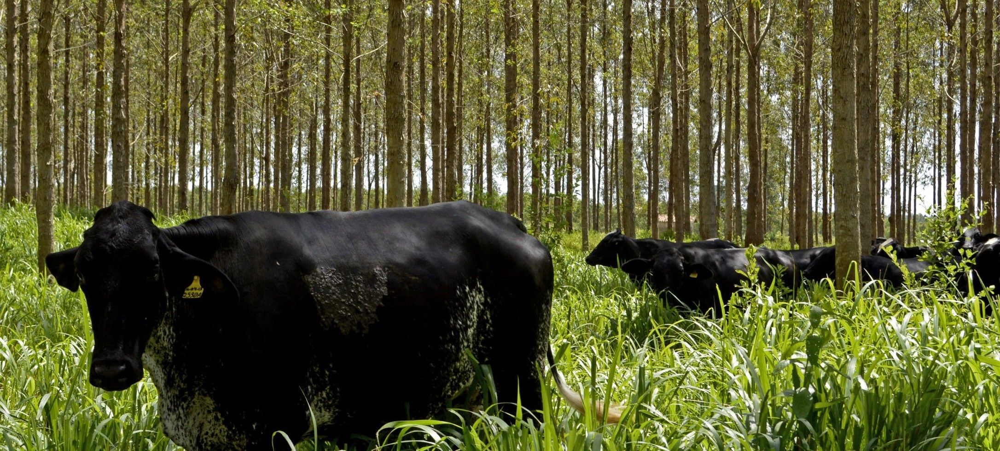
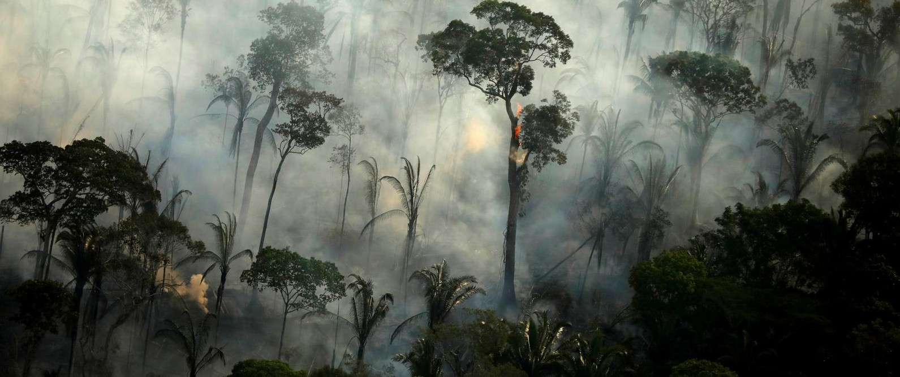
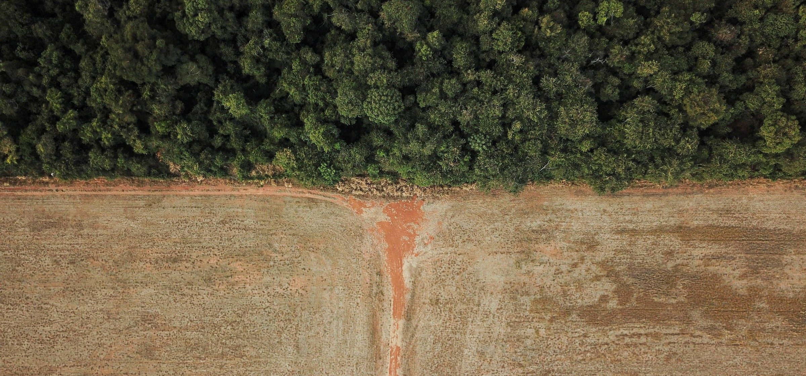

Projects
Estimating the potential carbon sequestration of integrated crop-livestock-forestry systems in brazil
This research focuses on estimating the carbon sequestration caused by the expansion of integrated crop-livestock-forestry farming systems in Brazil. Future projections will be performed based on data retrieved from the literature to predict the amount of above and below ground carbon accumulated in these systems along the years.

Estimating the effect of forest fires over forest carbon estimates in the Brazillian Amazon
In this experiment I’m trying to set up a research design to estimate the effect of forest fires over aboveground biomass in the amazon. The biomass estimates are derived from GEDI L4A product. The research design is built upon Mapbiomas land cover and fire data.

Creating accessible vizualisations of greenhouse gases in Brazil
This project consists in creating accessible vizualisations of emission data from the Climate Observatory. This is an exercise to improve the accessibility of academic documents in general, following guidelines and tools to facilitate information availability for all.

Calculation transition time from native forests to annual agricultura in the Brazzilian Amazon
This project consists in calculating the time to the transition from native forests to annual agriculture for the Mapbiomas land cover classification.
